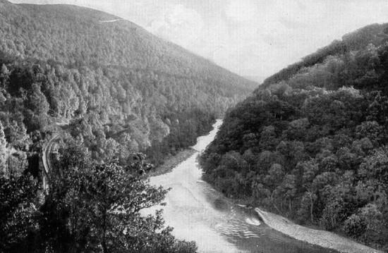
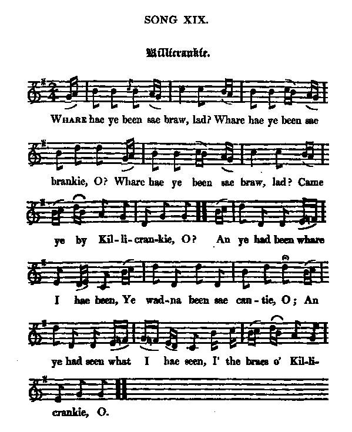

Killiecrankie
Whaur hae ye been sae braw
27th July 1689
Text revisited (?) by Robert Burns in Johnson's "Scots Musical Museum" Vol.III, p. 302, N°292, 1796and Hogg's "Jacobite Reliques" vol. I N°19, page 61, 1819

|
To the tune:
According to some authors, there are a Lowland/Williamite version and a Gaelic/Jacobite one to this tune. But in the Andrew Kunz' "Fiddler's Companion" the tunes given as the archetypes for these two main versions are very similar. A tune by the name of "Keel Cranke" was published by Henry Playford in his 1700 "Original Scots Tunes". However, the earliest handwritten version of the song appears to be the present one, noted in the Leyden Tablature Manuscript of c. 1692 , for which Burns wrote these lyrics. According to John Glen (Early Scottish Melodies, 1891): “That portion of “Killie Crankie” which is sung to the chorus is still more ancient; it forms part of the tune called “My Mistres blush is bonny” in the "Skene Manuscripts” (c. 1615 - 1635) . ”An' ye had been where I hae been” was set for violin and continuo by William McGibbon (1695-1756) in his "Scots Tunes", 1755, 74, and was printed by James Oswald in his "Caledonian Pocket Companion" vol. IX, N°18, 1758 and by Aird in his "Airs", vol. 2, N°17, in 1782. In fact, there appear to be 4 main versions of “Killiecrankie” tunes, as follows: |
A propos de la mélodie:
Selon certains auteurs il existe une version Orangiste des Lowlands et une version Jacobite gaélique de cette mélodie. Mais les archétypes notés par Andrew Kunz dans son "Fiddler's Companion" sont très semblables. Un morceau intitulé "Keel Cranke" fut publié par Henri Playford dans ses "Original Scots Tunes" en 1700. Mais la première version manuscrite semble être la présente version qui figure au Manuscrit de tablatures Leyden de 1692 environ, pour laquelle Burns composa ces paroles. Si l'on en croit John Glen ("Early Scottish Melodies, 1891), le refrain de ce chant est emprûnté à un autre chant encore plus ancien, "Que ma maîtresse est belle quand elle rougit", que l'on trouve dans les "manuscrit Skene" datant de 1615, environ. "An' ye had been where I hae been" a été transcrit pour le violon et basse continue par William McGibbon (1695-1756) dans ses "Scots Tunes", 1755, 74, et fut imprimé par James Oswald dans son "Caledonian Pocket Companion", vol. IX, N°18, 1758 et par Aird dans ses "Airs", vol. 2, N°17 en 1782. On peut distinguer, en réalité, 4 séries de mélodies "Killiecrankie", comme suit: |
| TUNE N° 1 | Original Sett | |
| Slow March | Original Sett | McGibbon's "Scots Tunes 1755 |
| Quick March | Original Sett, modernized | Gow's "First Repository" (1799) |
| Slow March | Other usual Version | Scots Musical Museum (1787), Hogg's " Jacobite Relics" (1819) |
| * | ||
| TUNE N° 2 | Quick march | |
| Quick March | Version 1 | Sequenced by Barry Taylor (see links) |
| Version 2 | Sequenced by Malcolm Littlemore | |
| * | ||
| TUNE N° 3 | If Ye hae been... | |
| Strathpey | "If Ye Hae Been Whar I Hae Been | Stewart-Robertson's Atholl Collection 1884 (the present sound background) |
| * | ||
| TUNE N° 4 | Planxty Davis and related tunes | |
| Planxty Davis | Irish harper Thomas O'Connellan (dead 1698) | |
| The Miller of Dee | Gow's "3d Repository" (1806) | |
| The Star of the County Down | Unless otherwise specified these tunes are sequenced by Ch.Souchon |
| Source "The Fiddler's Companion" (cf. links). | Source "The Fiddler's Companion" (cf. liens). |

Tune 2 - Version 2 (from "Jacobite Relics" Volume 1)
|
To the text:
There is nothing directly connecting Burns with this song. The note in the "Interleaved Museum", written by Robert Riddell, is only historical. William Stenhouse says, "The chorus is old. The rest of it, beginning "Whare hae ye been sae braw, lad", was written in 1789 by Burns on purpose for the Museum" ("Illustrations", p. 287, 1853). No one has disputed this statement. In the Highland tour, Burns passed through Killiecrankie on 31st August 1787. Killiecrankie is represented as a malignant song in "Scotch Presbyterian Eloquence Displayed", a contemporary publication. Source "Complete Songs of Robert Burns Online Book" (cf. Liens). Verses 4 and 5, of the source of which he says nothing are found only in Hogg's version, and were, presumably, written by himself. |
A propos du texte:
On n'a pas la preuve que Burns ait composé ce chant. La note rédigée par Robert Riddell dans le "Musée interfolié" n'est qu'un rappel historique. William Stenhouse écrit: "Le refrain est ancien. Le reste qui commence par "Tout équipé, d'où reviens-tu?", a été écrit en 1789 par Burns spécialement pour le Musée ("Illustrations", p. 287, 1853), une phrase que personne ne conteste. Lors de sa tournée des Highlands, Burns fit une halte à Killiecrankie, le 31 août 1787. "Killiecrankie" est présenté comme un chant malsain par le "Miroir de l'éloquence presbytérienne écossaise", une publication de l'époque. Source "Complete Songs of Robert Burns Online Book" (cf. Liens). Les strophes 4 et 5 qui n'existent que dans la version de Hogg, qui ne dit rien de leur origine sont, selon toute vraisemblance, de son cru. |

|
1. Whaur hae ye been sae braw, lad?
Whaur hae ye been sae brankie-o? Whaur hae ye been sae braw, lad? Cam' ye by Killiecrankie [1] -o? CHORUS: An' ye had been whaur I hae been Ye wadna been sae cantie-o An' ye had seen what I hae seen On the braes o' Killiecrankie-o 2. I fought at land, I fought at sea At hame I fought my auntie-o But I met the Devil and Dundee [2] On the braes o' Killiecrankie-o 3. The bauld Pitcur [3] fell in a furr And Clavers [4] gat a clankie-o Or I had fed an Athol gled On the braes o' Killiecrankie-o 4. Oh fie, McKay [5], What gart ye lie I' the brush ayont the brankie-o? Ye'd better kiss'd King Willie's [6] loff Than come tae Killiecrankie-o 5. It's nae shame, it's nae shame It's nae shame to shank ye-o There's sour slaes on Athol braes And the de'ils at Killiecrankie-o |
1. Tout équipé, d'où reviens-tu?
Toi qui t'es fait si joli - O? Jeune garçon, si bien vêtu, Viens-tu de Killiecrankie - O? [1] REFRAIN: Car quiconque en vient comme moi N'a point cet air épanoui - O, Ayant vu ce que j'ai vu, moi, Au col de Killiecrankie - O. 2. Sur terre, en mer j'ai combattu; Même ma tante, au logis - O. Mais j'ai vu le diable et Dundee [2] Au col de Killiecrankie - O! 3. Pitcur [3] tomba dans la rigole. Et si Clavers [4] n'eût péri - O, J'eûs été des milans d'Atholl La proie, à Killiecrankie - O! 4. Honte à toi, McKay [5]! Qui te somme De te terrer au maquis - O? Baise les mains du roi Guillaume [6] Et quitte Killiecrankie - O! 5. Je n'ai point de honte réelle, Point de honte à m'être enfui - O: Atholl regorge de prunelles; De diables, Killiecrankie - O! (Trad. Ch.Souchon(c)2009) |
|
Notes:
[1] Killiecrankie (gaelic for "aspen wood") is a mountain pass between Atholl Blair and Pitlochry, the scene of a battle between the forces of King William III and the Highlanders, on 27 July 1689. (cf map ). [2] The Scots were led by John Graham Claverhouse , called Bonnie Dundee . Coming from Inverness over the Corrieyairack and Drumochter Passes,he had raid Perth on 10 May 1689. He ambushed the Government army of 4000 men at the Pass of Killiecrankie although they outnumbered his own forces 2 to 1. The Highlanders (mostly from Clan Cameron, Donald, Stuart and McLean) overwhelmed them and Graham's victory was absolute. However, he had been mortally wounded. He could direct the battle and learn of his victory but died soon after. The Jacobites had no leader capable to replace him and were defeated at the Battle of Dunkeld. The first Jacobite Uprising ended on 1 May 1690. [3] Haliburton of Pitcur , fighting on Dundee's side fell in a drainage ditch (furr). [4] "Bluidy Clavers" was the name given Bonnie Dundee by his enemies. He was Lord of Claverhouse before being created Viscount Dundee by James VII.
[5]
General Hugh McKay
(1640-1692) was commander-in-chief of the Williamite forces in Scotland who marched
against Bonnie Dundie. His forces largely came from the Lowlands but included
also professional Highlands soldiers who fought against
their close relatives.
|
Remarques:
[1] Killiecrankie ("Bois de trembles" en gaélique) est un col entre Atholl Blair et Pitlochry qui fut le théatre d'une bataille entre les forces du roi Guillaume III et les Highlanders, le 27 juillet 1689. (Voir carte ). [2] Les Ecossais avaient pour chef John Graham Claverhouse , dit "Bonnie Dundee" . Venant d'Inverness par les cols de Corrieyairack et Drumochter, il avait pris Perth le 10 05 1689. Il tendit un piège à l'armée royale forte de 4000 hommes au Col de Killiekrankie malgré sa supériorité numérique de 2 contre 1. Les Highlanders (issus des Clans Cameron, Donald, Stuart and McLean) prirent l'avantage et Graham fut le vainqueur sans conteste. Mais il avait été mortellement blessé. Il put diriger la bataille et sut qu'il en était le vainqueur, mais il mourut peu après. Les Jacobites n'avaient pas de chef de sa trempe et furent défaits à la bataille de Dunkeld.La première insurrection Jacobite prit fin le 1 mai 1690. [3] Haliburton of Pitcur , compagnon de Dundee tomba dans un fossé de drainage. [4] "Clavers le sanguinaire" : ainsi ses adversaires nommaient-ils Bonnie [=brave] Dundee qui était Lord Claverhouse avant d'avoir été fait Vicomte Dundee par Jacques VII. [5] Le général Hugh McKay (1640-1692) était commandant-en-chef des forces Orangistes en Ecosse opposées à Bonnie Dundie: troupes provenant principalement des Basses-Terres, mais aussi dsoldats de métier des Highlands combattant contre leurs proches parents. [6] Guillaume III d'Orange qui régna sur la Grande Bretagne de 1689 à 1702, en tant qu'époux de la Reine Marie II. |
The Corries singing "Killiecrankie" (tune 2, version 2)